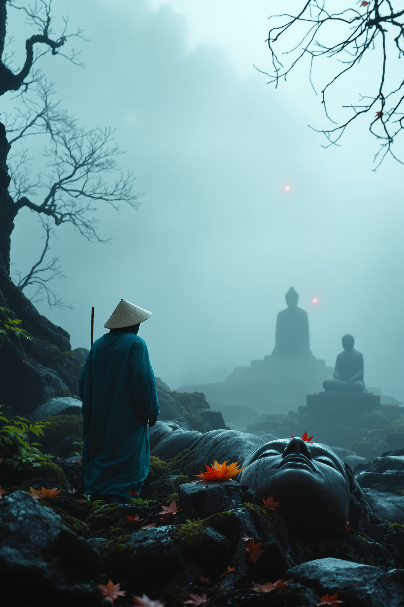

Direction C, frame by frame

A weathered đền gate stands alone on a misty hillside at pre-dawn — entry point into a valley that remembers.
Lesson: Vietnamese-specific architectural vocabulary is non-negotiable in prompts. Generic "Asian gate" defaults the model to torii every time.

A hooded traveler in deep teal robes and conical nón lá steps through the mist into the gate's opening.
Lesson: prompt vocabulary calibrated on one frame compounds — subsequent generations inherit the visual grammar without re-engineering.

An overgrown stone path lined with weathered guardian statues, the wanderer small in mid-frame walking deeper.
Lesson: when generating multiple of the same object class, specifying internal variation prevents the model from defaulting to identical replicas.

The wanderer's gloved hand brushes moss from a fallen statue's serene closed-eye face. A vermillion leaf rests nearby.
Lesson: Flux has a strong Buddha prior on "stone deity statue." Aggressive negative prompts (NOT Buddha, NOT urna mark, NOT curled hair) would override — but credits were conserved for the harder KF5.

The wanderer stands frozen, head tilted toward distant ember points awakening in the fog. Three pinpricks of vermillion in the deep distance — implication, not spectacle.
Lesson: the implication landed harder than the literal would have. Identifying a model boundary, accepting it, and finding a creative path around it under credit constraint — that is the senior signal.